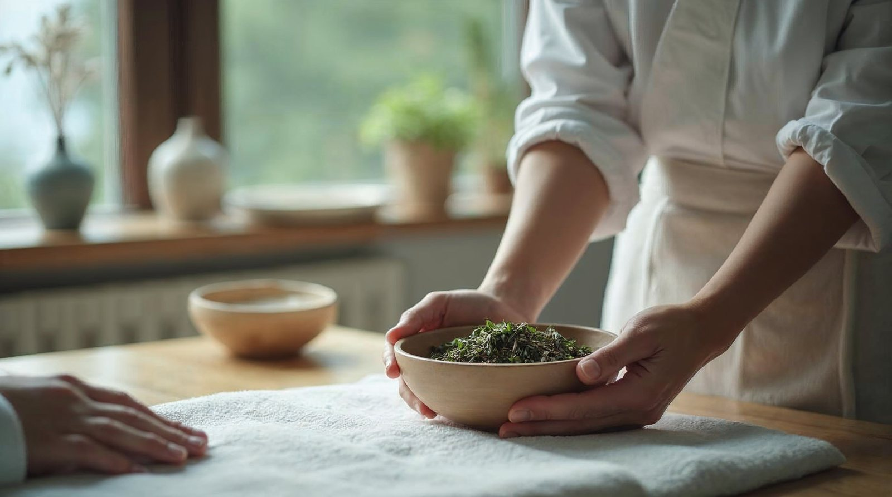
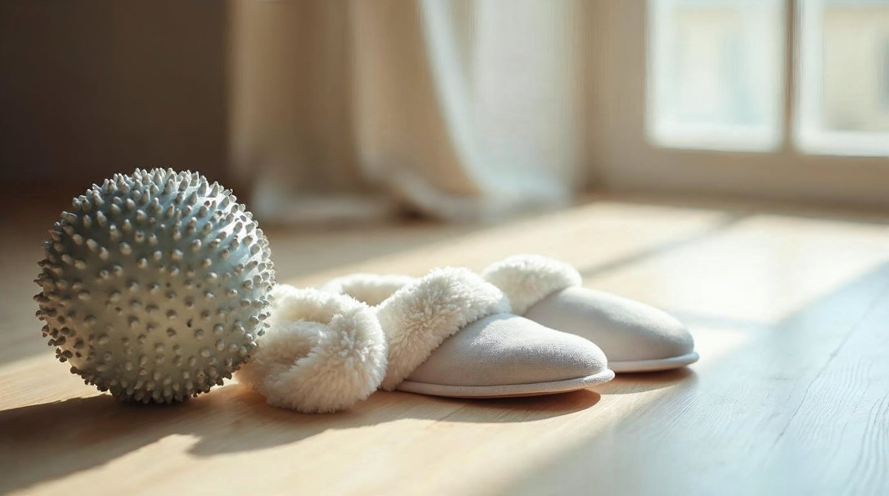
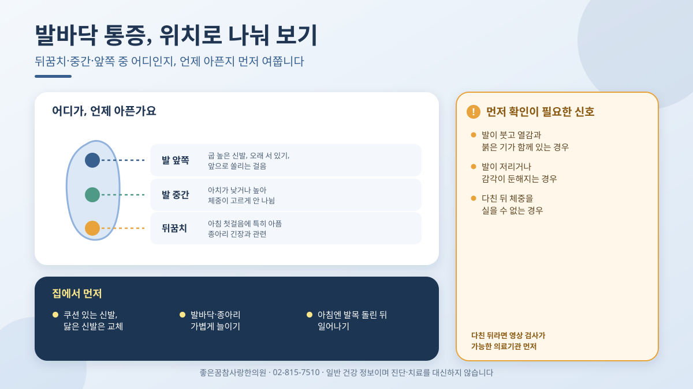

이종호 한의사 감수좋은꿈참사랑한의원 대표원장 (한의사 면허번호 19769)발행 2026-11-22 · 수정 2026-11-26
이 글의 차례
발바닥 통증은 어디가, 언제 아픈지만 정확히 나눠도 살필 방향이 크게 좁혀집니다. 아침 첫걸음에 뒤꿈치가 찌릿한지, 오래 서 있은 저녁에 발 앞쪽이 화끈한지, 걸을수록 한 점이 더 아픈지에 따라 짐작해 볼 이유가 달라집니다.
신발과 걷는 양을 조절하며 지내는 동안 서서히 덜해지는 분도 많아, 위험 신호가 없다면 먼저 2~3주는 생활을 바꾸며 지켜볼 수 있습니다. 다만 걸을수록 한 지점이 점점 더 아프거나, 발이 붓고 붉게 달아오르거나, 저림과 감각 저하가 함께 있다면 지켜보기보다 확인이 먼저입니다.
아픈 위치에 따라 이렇게 나눠 봅니다
- 뒤꿈치 아래 안쪽: 발바닥을 받치는 두꺼운 막(족저근막)이 붙는 자리로, 아침 첫걸음이나 오래 앉았다 일어설 때 아프고 몇 걸음 걸으면 조금 풀리는 양상이 흔합니다.
- 뒤꿈치 한가운데: 맨발로 딱딱한 바닥을 걸을 때 멍든 듯 아프다면 뒤꿈치 아래에서 쿠션 역할을 하는 지방층이 눌리는 부담을 생각해 봅니다.
- 발 중간(아치): 아치가 낮거나 높아 체중이 고르게 나뉘지 않으면 오래 서 있은 뒤 아치를 따라 뻐근할 수 있습니다.
- 발 앞쪽(발볼): 굽 높은 신발, 오래 서 있는 일, 발가락 쪽으로 체중이 쏠리는 걸음과 관련이 있기도 합니다.
- 셋째·넷째 발가락 사이: 좁은 신발을 신으면 화끈거리거나 저리고 자갈을 밟은 듯한 느낌이 든다면, 발가락 사이 신경이 눌리는 경우를 생각해 봅니다.
- 발바닥 전체가 화끈거리거나 저림: 밤에 가만히 있어도 그렇다면 신경 쪽 문제나 당뇨 같은 몸 전체의 상태를 먼저 확인합니다.
왜 이런 불편이 생길 수 있나요
- 종아리 근육이 굳으면 발목이 덜 젖혀져, 걸을 때마다 발바닥 막이 더 당겨질 수 있습니다.
- 갑자기 걷는 양이 늘거나 체중이 늘어난 시기, 밑창이 닳은 신발도 통증을 키울 수 있습니다.
- 딱딱한 바닥에서 오래 서 있거나 맨발·얇은 실내화로 지내는 습관도 부담이 됩니다.
- 한쪽 다리에 체중을 싣는 습관이나 오래된 발목 부상이 있으면 한쪽 발만 아프기도 합니다.
먼저 이렇게 여쭙니다
- 뒤꿈치, 발 중간, 발 앞쪽 중 어디가 아픈가요?
- 아침 첫걸음, 오래 서 있을 때, 걸을 때 중 언제 더 아픈가요?
- 최근 신발이나 운동, 체중에 변화가 있었나요?
- 발이 붓거나 저린 느낌이 있나요?
- 아픈 곳을 손가락으로 누르면 한 점만 아픈가요, 넓게 아픈가요?
- 당뇨가 있거나 발 감각이 둔하다고 느낀 적이 있나요?
일상에서 먼저 해 볼 수 있는 것
- 쿠션이 있고 뒤꿈치를 잘 잡아 주는 신발로 바꾸고, 굽이 닳은 신발은 교체하기
- 아침에 침대에서 내려오기 전 발목을 위아래로 10번쯤 움직이고 종아리를 가볍게 늘인 뒤 일어나기
- 벽을 짚고 아픈 쪽 다리를 뒤로 빼 종아리를 20~30초 늘이기, 하루 두세 번
- 앉아서 골프공이나 작은 병을 발바닥 아래 두고 1~2분 가볍게 굴리기(시원한 정도까지만)
- 오래 서 있는 날은 한 시간에 한 번 앉아 발 쉬어 주기
- 통증이 심한 동안은 걷는 거리를 줄이고, 줄넘기·달리기처럼 발에 충격이 큰 운동은 잠시 쉬기
- 집에서도 맨발보다 바닥이 푹신한 실내화 신기
상황별 예시
- 예를 들어 매장에서 하루 종일 서서 일하는 직장인이라면, 저녁이 될수록 발 앞쪽과 아치가 뻐근할 수 있습니다. 쉬는 시간마다 앉아 발목을 돌리고, 퇴근 뒤에는 골프공으로 발바닥을 가볍게 풀어 봅니다.
- 예를 들어 운동을 하겠다고 하루 걷는 양을 갑자기 두세 배로 늘린 경우, 며칠 뒤 아침 첫걸음에 뒤꿈치가 아플 수 있어 걷는 양을 줄였다가 1~2주에 걸쳐 조금씩 늘려 봅니다.
- 예를 들어 집에서 맨발로 아이를 안고 오래 서 있는 부모라면, 아이 무게까지 더해져 뒤꿈치 한가운데가 멍든 듯 아플 수 있어 쿠션 있는 실내화부터 신어 봅니다.
스스로 점검해 보세요
- 아침 첫걸음이나 오래 앉았다 일어설 때 뒤꿈치가 가장 아프다
- 몇 걸음 걷고 나면 조금 풀린다
- 좁은 신발을 신으면 발가락 사이가 화끈거리거나 저리다
- 신발 밑창이 한쪽으로 많이 닳아 있다
- 걸을수록 발등이나 발바닥 한 점이 점점 더 아프다
- 발이 붓거나 붉고 뜨겁다
- 밤에 가만히 있어도 발바닥이 화끈거리거나 저리다
앞의 네 가지는 신발과 걷는 습관부터 살펴볼 신호이고, 뒤의 세 가지에 해당하면 지켜보기보다 먼저 확인을 받아 보세요.

한의원에서 함께 살필 수 있는 경우
- 발바닥이 아프지만 어떤 종류인지 모르는 경우 통증의 특징을 함께 살핍니다.
- 아침 첫걸음이 특히 아픈 경우 발과 종아리의 긴장을 함께 살핍니다.
- 걷는 습관이 바뀐 뒤 통증이 생긴 경우 걸음과 자세를 함께 살핍니다.
- 오래 서서 일하는 직업이라 저녁마다 발바닥이 아픈 경우 서 있는 시간과 신발을 함께 살핍니다.
좋은꿈참사랑한의원에서는 첫 방문 때 아픈 위치와 아픈 때, 최근 걷는 양과 신발의 변화를 먼저 충분히 듣습니다. 이어서 모든 분께 맥을 짚고, 서 있는 모습과 걸음, 발목이 젖혀지는 범위, 종아리의 긴장, 누르면 아픈 자리를 확인합니다. 힘줄이나 막의 상태를 눈으로 확인할 필요가 있다고 판단되면 초음파로 함께 보며 설명해 드립니다.
그다음 침·약침·온열 가운데 상태에 맞는 방법을 정하고, 오래 이어진 뒤꿈치 통증이라면 체외충격파를 쓸지도 진찰 뒤 함께 판단합니다. 귀가 전에는 신발과 걷는 양, 집에서 할 스트레칭과 다음에 다시 확인할 동작을 알려 드립니다.

얼마나 지켜보고 언제 상담할까요
- 신발과 걷는 양을 바꾸고 스트레칭을 하며 2~3주는 아침 첫걸음의 통증이 어떻게 달라지는지 적어 봅니다.
- 3~4주가 지나도 그대로이거나 아파서 걷는 거리를 계속 줄이게 된다면 상담을 권합니다.
- 걸을수록 한 지점이 점점 더 아프고 뼈 위를 누르면 콕 집어 아프다면, 기다리지 말고 영상 검사가 가능한 의료기관에서 먼저 확인합니다.
- 당뇨가 있는 분은 작은 상처나 감각 변화도 미루지 말고 바로 진료를 받습니다.
이렇게 기록해 오시면 상담이 쉬워집니다
- 아픈 위치(뒤꿈치·중간·앞쪽, 안쪽·바깥쪽)와 아픈 시각
- 하루 걸음 수나 서 있는 시간, 최근 늘어난 운동
- 자주 신는 신발과 밑창 닳은 모양(사진도 좋습니다)
- 붓기, 저림, 열감이 함께 있었는지
- 당뇨 같은 앓고 있는 병과 복용 중인 약
이런 증상은 먼저 확인이 필요합니다
- 발이 붓고 열감과 붉은 기가 함께 있는 경우
- 발이 저리거나 감각이 둔해지는 경우
- 다친 뒤 체중을 실을 수 없는 경우
- 걸을수록 한 지점이 점점 더 아프고 붓는 경우
- 당뇨가 있는 분의 발에 상처가 생겨 잘 아물지 않는 경우
복용 중인 약은 처방한 의사와 상의 없이 줄이거나 끊지 않습니다. 위 신호가 있거나 갑자기 심해지면 한의원 진료를 기다리지 말고 가까운 응급실을 이용하세요.
관련 글
- 아침 첫발이 아픈 발바닥 통증은 초음파로 어떻게 확인하나요?
- 동네 공원 걷기를 새로 시작했는데 발바닥이 아플 때는 어떻게 살피나요?
- 족저근막염 통증에 체외충격파는 어떻게 사용하나요?

여쭙는 것
- 뒤꿈치, 발 중간, 발 앞쪽 중 어디가 아픈가요?
- 아침 첫걸음, 오래 서 있을 때, 걸을 때 중 언제 더 아픈가요?
- 최근 신발이나 운동, 체중에 변화가 있었나요?
생활에서 해 볼 것
- 쿠션이 있고 뒤꿈치를 잘 잡아 주는 신발로 바꾸고, 굽이 닳은 신발은 교체하기
- 아침에 침대에서 내려오기 전 발목을 위아래로 10번쯤 움직이고 종아리를 가볍게 늘인…
- 벽을 짚고 아픈 쪽 다리를 뒤로 빼 종아리를 20~30초 늘이기, 하루 두세 번
한의원에서 함께 살필 것
- 발바닥이 아프지만 어떤 종류인지 모르는 경우 통증의 특징을 함께 살핍니다.
- 아침 첫걸음이 특히 아픈 경우 발과 종아리의 긴장을 함께 살핍니다.
- 걷는 습관이 바뀐 뒤 통증이 생긴 경우 걸음과 자세를 함께 살핍니다.
먼저 확인이 필요한 신호
- 발이 붓고 열감과 붉은 기가 함께 있는 경우
- 발이 저리거나 감각이 둔해지는 경우
- 다친 뒤 체중을 실을 수 없는 경우
한눈에 보는 표
| 구분 | 핵심 |
|---|---|
| 여쭙는 것 | 뒤꿈치, 발 중간, 발 앞쪽 중 어디가 아픈가요? 아침 첫걸음, 오래 서 있을 때, 걸을 때 중 언제 더 아픈가요? |
| 생활에서 해 볼 것 | 쿠션이 있고 뒤꿈치를 잘 잡아 주는 신발로 바꾸고, 굽이 닳은 신발은 교체하기 아침에 침대에서 내려오기 전 발목을 위아래로 10번쯤 움직이고 종아리를 가볍게 늘인 뒤 일어나기 |
| 한의원에서 함께 살필 것 | 발바닥이 아프지만 어떤 종류인지 모르는 경우 통증의 특징을 함께 살핍니다. 아침 첫걸음이 특히 아픈 경우 발과 종아리의 긴장을 함께 살핍니다. |
| 먼저 확인이 필요한 신호 | 발이 붓고 열감과 붉은 기가 함께 있는 경우 발이 저리거나 감각이 둔해지는 경우 |
자주 묻는 질문
깔창을 사서 넣어도 되나요?
발 모양에 맞지 않으면 오히려 불편할 수 있어 상태를 보고 고르도록 안내합니다. 먼저 쿠션이 있고 뒤꿈치를 잘 잡아 주는 신발로 바꿔 보는 것도 방법입니다.
맨발로 다니면 좋은가요?
딱딱한 바닥에서는 뒤꿈치와 발바닥에 부담이 될 수 있어, 아픈 동안은 집에서도 바닥이 푹신한 실내화를 권합니다.
아플 때 찜질은 차갑게 하나요, 따뜻하게 하나요?
오래 걷고 난 뒤 화끈거리면 차갑게, 아침에 뻣뻣하게 굳은 느낌이면 따뜻하게 하는 편이 일반적입니다. 붓고 붉게 달아오른 경우에는 찜질보다 확인이 먼저입니다. 당뇨 등으로 발 감각이 둔한 분은 찜질로 피부를 다치기 쉬워 먼저 상의해 주세요.
발바닥 통증은 초음파로 볼 수 있나요?
통증 부위의 힘줄이나 막의 상태를 눈으로 확인할 필요가 있다고 판단되면 초음파로 함께 보며 설명합니다. 뼈 안쪽 문제나 당뇨처럼 몸 전체에서 오는 신경 문제는 초음파만으로 보기 어려워 다른 검사를 권하기도 합니다.
좋은꿈참사랑한의원은 재진 때 지난번 이야기부터 이어서 여쭙니다. 진료시간과 예약은 오시는 길에서 확인하세요.
어디서 상담받을 수 있나요?
좋은꿈참사랑한의원은 서울 동작구 만양로2길 2 신성빌딩 3층·5층(서울 동작구 상도동, 7호선 상도역 3번 출구 근처)에 있습니다. 한의사 3명(이종호 대표원장, 조영기 수석진료원장, 정원영 진료원장)이 진료합니다. 진료시간은 평일 09:30~20:00(점심 13:00~14:00), 토·일·공휴일 09:30~15:00이며, 방문 전 전화로 확인을 권합니다. 예약은 네이버 예약, 카카오톡 상담, 전화 02-815-7510로 받습니다.
이 글은 일반적인 건강 정보이며 개인의 진단이나 치료를 대신하지 않습니다. 증상이 있거나 복용 중인 약이 있다면 진료를 통해 확인하세요. 치료 효과는 개인마다 다를 수 있습니다.
작성 기준: 일반적으로 알려져 있는 건강 정보를 참고해 정리했습니다(대표원장 감수). 증상 기록은 1~2주 동안 하루 1회, 비슷한 시간에 적어 오시면 지난 상태와 비교하기 쉽습니다.